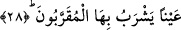

nefisliğini vurgulamaktadır. Buna göre âyette şöyle denmiş oluyor: Bu rahîkın içine
tesnim suyundan katılmıştır. “Tesnim” Adn Cennetinden akan bir pınarın adıdır.
Kendisine tesnim denilmesi yükseklik anlamına gelen “seneme” fiilinin masdarı
olmasındandır. Pınarın bu ismi alması; ya Cennette en yüksek değerdeki meşrubat
olmasından dolayıdır ki bu durumda mertebe itibariyle yükseklik söz konusu olmuş olur.
Ya da bu içecek müttakilere üst taraflarından, yukarılarından gelmesi itibariyledir. Bu
takdirde ise yükseklik, mekan itibariyle olmuş olur.
Rivâyete göre tesnim kaynağı havada yukardan aşağıya doğru akar ve onların
kaplarına dökülür. Kapları dolduğunda bir damlası bile yere dökülüp de yerden su
çekmeye muhtaç olmasınlar diye suyun akması durur.
28. (O Tesnîm Allah’a) yakın olanların içecekleri bir kaynaktır.
Âyette yer alan “aynen” kelimesi medh ve övgü bakımından tahsis ifâde etmek üzere
mansubtur. “Allah’a yakınlık” manevi ve ruhi yönden yakınlık anlamındadır. Buna göre
âyetin mânâsı şöyledir: Onlar sırf bu saf içkiyi içeceklerdir. Diğer cennetlikler ise -ki
bunlar ashabu’l-yemîndirler- böylesine saf içkiyi değil, karışık içkiyi içeceklerdir.
Âyetteki “bâ” harfi ya ziyadedir veya “min” mânâsındadır.
Bu âyet-i kerimede ruhâni Cennetteki “tesnîm”in mârifetullah ve muhabbetullah
olduğuna ayrıca Allah’ın vech-i kerîmine bakma lezzeti olduğuna işâret vardır. Rahîk’ın
ise bazen Allah’ın vechine bakarak, bazen onun yaratıklarına bakarak gönül huzuru
duymak olduğuna işâret vardır. Şu halde mukarrebûn olanlar ebrârdan daha üstündürler.
Ayrıca tesnim de rahîk’tan daha üstün ve daha tatlıdır.
Mukarrebler mâsivayla meşgul olmadıklarından, yâni Hakk’ın muhabbetine başka bir
muhabbet karıştırmadıklarından onların şarabı hâlistir. Hakk’ın sevgisine başka sevgi
karıştıranların şarabı ise memzûc/karıştırılmış olur.
Biz keder tortusu bulunmayan zevk u safanın şarabını isteriz
Hâlis şarap içenler başka, tortu içenler başkadır.
Bazıları demişler ki:
Kulun tesbihi ancak Senin cemâlini vasfeder
Onun her iki cihandan isteği Ssenin vuslatına ermektir
Herkesin kalbinde başkasının arzusu vardır
Kulun kalbinin arzusu sâdece Senin hayâlindir.
Bahru’l-hakâik’te gelmiştir ki: “Rahîk” kelimesi iki dünya sarhoşluğunun